- ＨＯＭＥ
- >
- 部活動
- >
- 女子テニス
- >
- 女子テニス部ＴＯＰＩＣＳ
女子テニス部は、令和４年１月５日㈬･６日㈭に、
大阪市･マリンテニスパーク北村で開催された、
第19回近畿公立高等学校テニス大会団体の部において、
準優勝の成績を収めました。
大会への出場は１２年連続、
決勝戦に臨むのは３回目でしたが、
惜しくも初優勝を逃しました。
悲願の達成に向けて、さらに努力を重ねます。
対戦結果
予選トーナメント １Ｒ 山城 ５０ 池田(大阪)
２Ｒ 山城 ３０ 東大津(滋賀)
決勝トーナメント １Ｒ 山城 ３１ 三島(大阪)
準決勝 山城 ３２ 加古川北(兵庫)
決勝 山城 ２３ 栗東(滋賀)
＊綿密な感染症対策の中、大会を実施していただいた実行委員会の皆様、
練習試合をしていただいた各校テニス部の皆様、男子テニス部、
選手の練習を支えていただいた保護者の皆様、
ありがとうございました。

◎１２月２５日㈯と２６日㈰に、
山城総合運動公園で開催された、
京都招待テニス選手権大会に京都府代表として出場し、
団体の部で準決勝で敗退し、三位決定戦で勝利して、
第三位の成績を収めました。
個人戦では、シングルスもダブルスも、
１Ｒを勝ち上がることができました。
対戦結果
団体の部 １Ｒ 山城 ２１ 大阪女学院(大阪)
２Ｒ 山城 ２０ 近代和歌山(和歌山)
準決勝 山城 ０２ 園田学園(兵庫)
三位決 山城 ２０ 奈良学園(奈良)
個人の部シングルス
１Ｒ 藤本萌七未(２年) ３６ 大阪女学院(２年)(大阪)
本間 涼帆(２年) ６０ 開智(２年)(和歌山)
２Ｒ 本間 涼帆(２年) ０６ 奈良育英(２年)(奈良)
ｺﾝｿﾚｰｼｮﾝﾏｯﾁ 藤本萌七未(２年) ４１ 奈良育英(１年)(奈良)
藤本萌七未(２年) ２４ 園田学園(２年)(兵庫)
本間 涼帆(２年) ４０ 栗東(２年)(滋賀)
本間 涼帆(２年) ０４ 園田学園(２年)(兵庫)
個人の部ダブルス
１Ｒ 安田(２年)永井(２年) ６２ 開智(２年生ペア)(和歌山)
２Ｒ 安田(２年)永井(２年) １６ 立命館守山(２年生ペア)(滋賀)
ｺﾝｿﾚｰｼｮﾝﾏｯﾁ 安田(２年)永井(２年) １４ 園田学園(２年生ペア)(兵庫)

女子テニス 活動報告
◎新型コロナウイルス感染拡大も
ようやく落ち着きを見せ始め、
練習試合の機会が増えてきました。
それぞれ、良い経験をさせていただきました。
各高校、およびクラブチームの皆様、
ありがとうございました。
○11月13日(土) 膳所高校、及び滋賀県のジュニア選手(中学生)と
同校のテニスコートをお借りして、
団体戦形式で練習試合を行いました。
○11月14日(日) 午後、立命館宇治高校と、
同校のテニスコートをお借りして、
個人戦形式で練習試合を行いました。
○11月20日(土) 明石城西高校(兵庫県)と、
同校のテニスコートをお借りして、
終日、練習試合を行いました。
海に近い高校です。
〇京都府公立高等学校テニス選手権大会 優勝
１１月６日（土）に、向島西テニスコートで開催された、
令和３年度第２２回京都府公立高等学校テニス選手権大会２次予選において、
優勝を果たしました。
本大会での優勝は１１回目、９年連続です。
試合結果 準決勝 山城 ３０(打切) 洛西
決勝 山城 ３０(打切) 南陽
団体メンバー（登録順）
藤本萌七未(2年) 本間 涼帆(2年) 安田 奈央(2年)
永井 千優(2年) 五十川夏琉(2年) 大槻 芽衣(1年)
中村 柚音(2年) 井上奈那子(2年) 中野 知風(2年)
この結果により、来年１月に大阪で行われる、
第１９回近畿公立高等学校テニス大会(団体の部)に、
京都府代表として出場が決まりました。
近畿大会への出場は１２回連続となります。
応援していただいた保護者の皆様
ありがとうございました。
悲願の優勝を目指して、部員全員で頑張ります。
〇京都府高等学校テニス選手権大会
１０月９日(土)～３１日(日)にかけて開催された、
令和３年度第４１回京都府高等学校テニス選手権大会において、
以下の選手が、本戦での成績を残しました。
女子シングルス結果
藤本萌七未(2年) ベスト１６
中村 柚音(2年) ベスト３２
本間 涼帆(2年) 本戦出場
安田 奈央(2年) 本戦出場
五十川夏琉(2年) 本戦出場
女子ダブルス結果
藤本(2年)本間(2年) 本戦出場
安田(2年)永井(2年) 本戦出場
この結果により、
藤本、本間、安田、五十川の４名が、
来年２月に大阪で開催される、
令和３年度第１０回近畿公立高等学校テニス大会(個人の部)に、
京都府代表として出場が決まりました。
〇全国選抜高校テニス大会京都府大会
９月１９日(日)～２３日(祝)にかけて開催された、
令和３年度全国選抜高校テニス大会京都府大会(団体戦)において、
２年連続で、ベスト４に入賞しました。
対戦結果 ２Ｒ 山城 ５０ 南陽
３Ｒ 山城 ５０ 京都橘
準々決勝 山城 ３０(打切) 同志社女子
準決勝 山城 ０４(打切) 京都外大西
３～４位決定戦 山城 ０３(打切) 京都両洋
この結果により、１２月に京都で開催される、
京都招待テニス選手権大会(団体の部・個人の部)に、
京都府の代表として出場が決まりました。

〇近畿高等学校テニス大会
９月１２日（日）、滋賀県・長浜市民庭球場で開催された、
令和３年度近畿高等学校テニス大会・女子シングルスに、
藤本萌七未(２年)が出場しました。
１回戦は奈良学園登美ヶ丘高校の選手に６２で勝利しましたが、
２回戦で大阪府・浪速高校のシード選手に３６で敗退しました。
緊急事態宣言が延長され、
厳しい感染症対策が求められる中、
大会を運営してくださった滋賀県の先生方、
ありがとうございました。
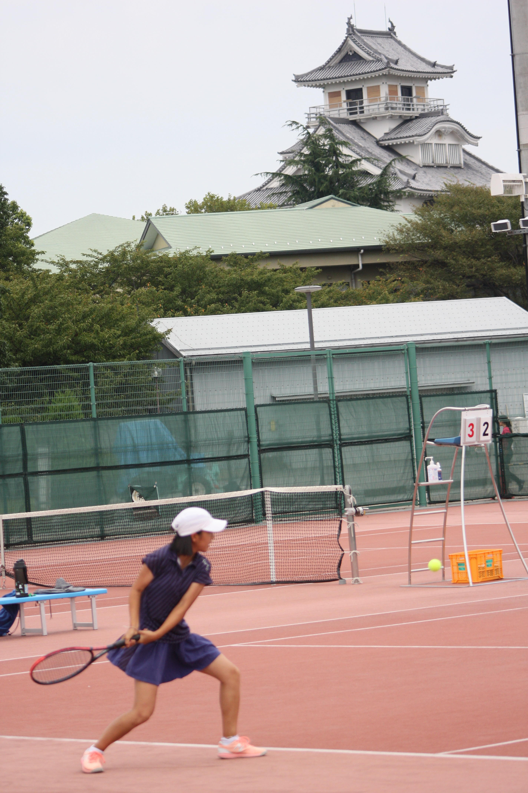
女子テニス部 大会結果
〇京都府公立高等学校テニス選手権大会
８月２日（月）に、丹波自然運動公園で開催された、
令和３年度第22回京都府公立高等学校テニス選手権大会において、
以下の成績を収め、11月に開催される、
２次予選に駒を進めました。
試合結果 ２R 山城 ５０ 城南菱創
３R 山城 ３０(打切) 桃山
団体メンバー（登録順）
藤本萌七未(２年) 本間 涼帆(２年) 安田 奈央(２年)
大槻 芽衣(１年) 永井 千優(２年) 五十川夏琉(２年)
中村 柚音(２年) 井上奈那子(２年) 中野 知風(２年)
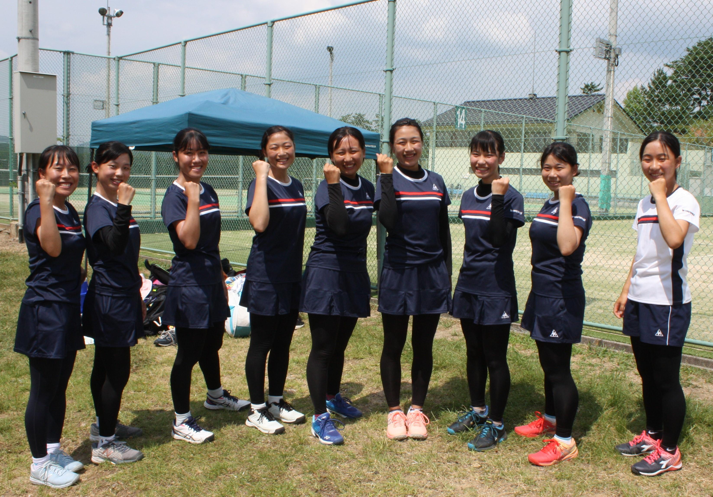
〇近畿高等学校テニス大会京都府予選
８月１８日～２４日に開催された、
令和３年度近畿高等学校テニス大会京都府予選において、
以下の成績を収めました。
女子シングルス結果
藤本萌七未(２年) ベスト８
本間 涼帆(２年) ベスト32
安田 奈央(２年) べスト32
永井 千優(２年) ベスト32
五十川夏琉(２年) 本戦出場
女子ダブルス結果
藤本(２年)本間(２年) 本戦出場
井上(２年)中野(２年) 本戦出場
大槻(１年)吉田(１年) 本戦出場
以上の結果により、
女子シングルスにおいて、
藤本萌七未(２年)が、
９月に滋賀県長浜市で開催される、
近畿高等学校テニス大会に、
２年連続で出場することが決まりました。
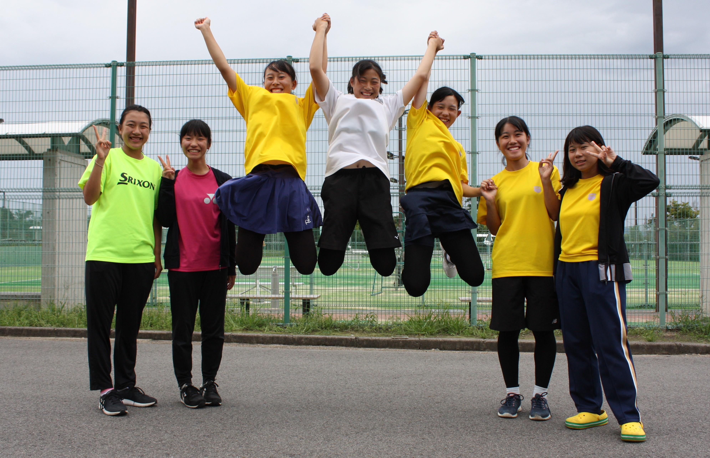 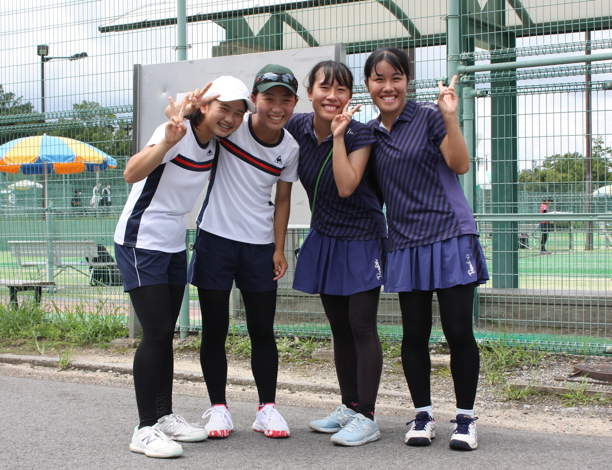
女子テニス部 活動報告
〇令和３年度夏期合宿
８月９日（月）から12日（木）にかけて、
福知山市の大江山グリーンロッヂにおいて、
夏期合宿を行いました。
天候悪化が心配される中、
ほぼ予定通りの内容を行うことができました。
感染症対策を万全にしてくださった宿舎の皆様、
大変ありがとうございました。
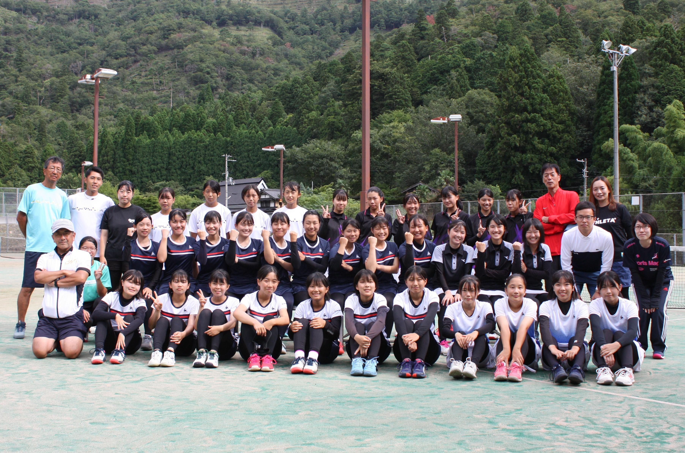
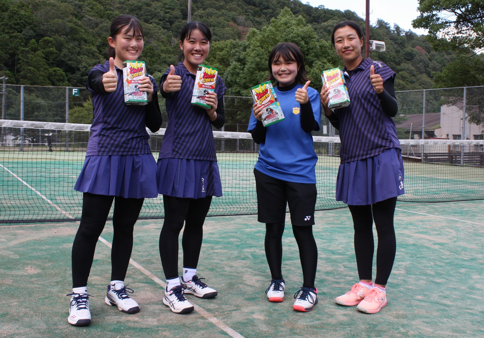 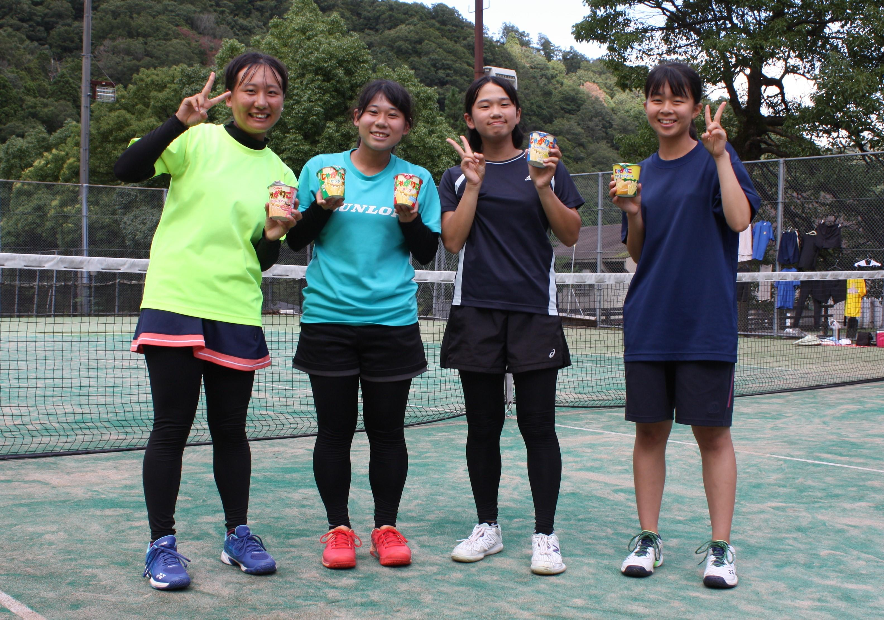
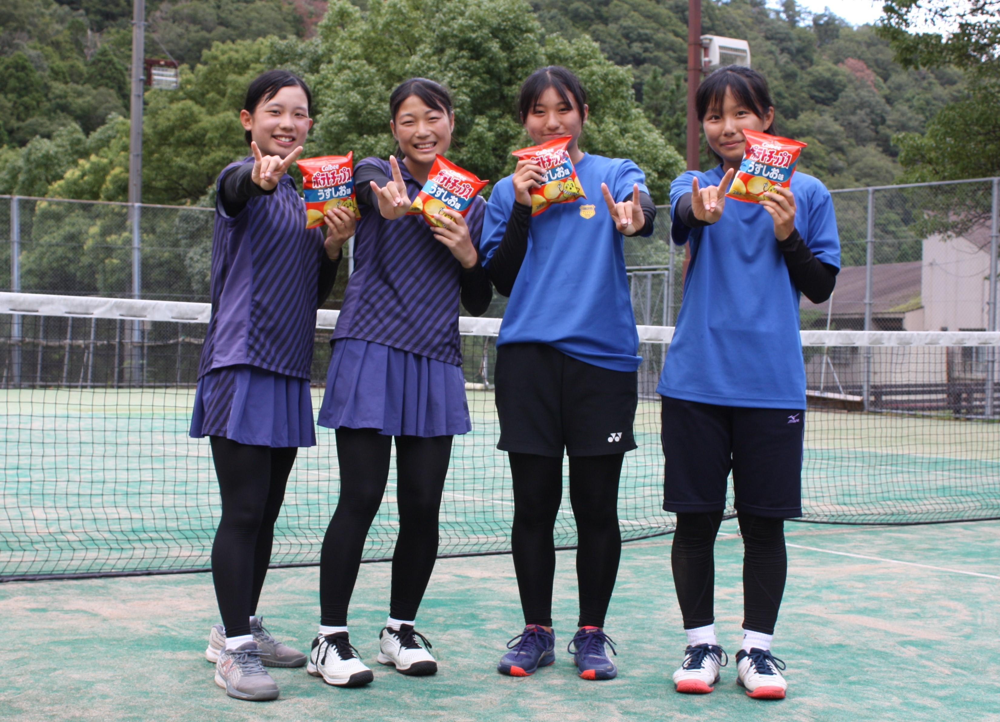 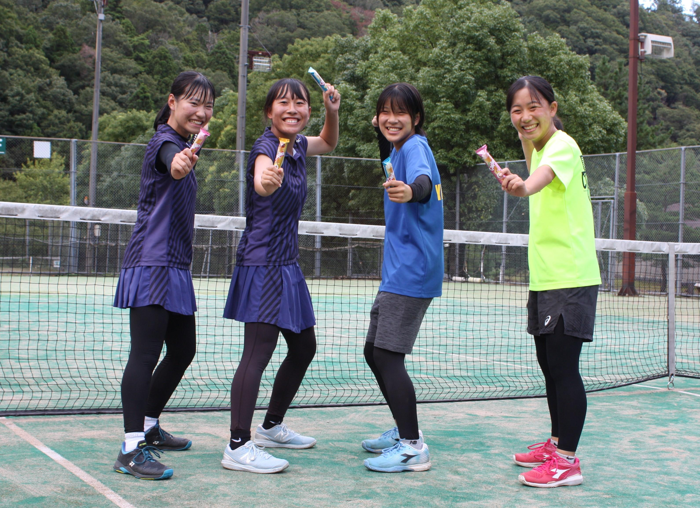
〇８月５日（木）滋賀県 膳所高校との練習試合
昨年来、新型コロナウイルス感染拡大に伴い、
何度も延期を余儀なくされていた
膳所高校との練習試合を、
ようやく行うことができました。
準備していただいた膳所高校の皆さん、
ありがとうございました。
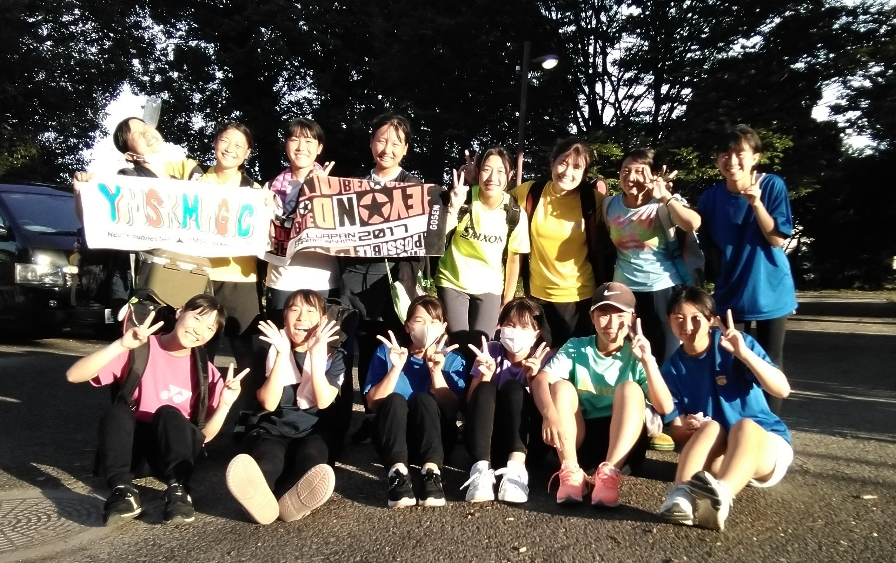
〇８月６日（金）同志社女子高校との練習試合
同志社女子高校のテニスコートが改修されて以来、
念願だった練習試合に行かせていただきました。
お世話になった同志社女子高校の皆さん
ありがとうございました。
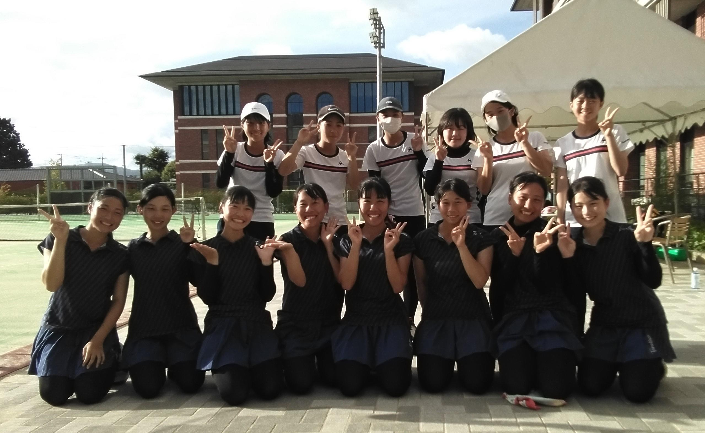
〇８月16日（月）京都橘高校との練習試合
京都橘高校との練習試合を、
山城高校会場と京都橘高校会場とにわかれて行いました。
公式戦を直前に控え、いい経験となる練習試合でした。
京都橘高校の皆さん、ありがとうございました。
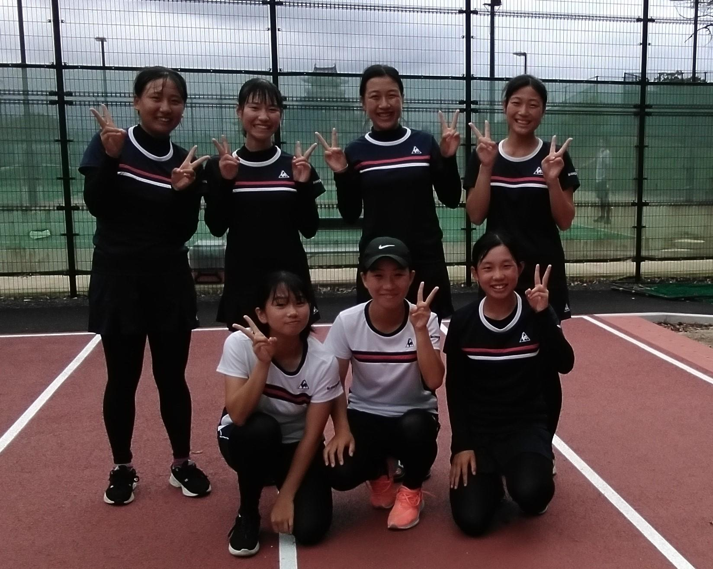
女子テニス部･大会結果
◎女子テニス部 ７月の大会結果
〇７月１３日(火) 大阪市の、
ＩＴＣ靫テニスセンターで開催された、
2021年度 関西ジュニアテニス選手権大会
18歳以下女子シングルスに、
村上 らん(３年)が
京都府代表として出場しました。
惜しくも１回戦敗退となりましたが、
立派に戦いました。
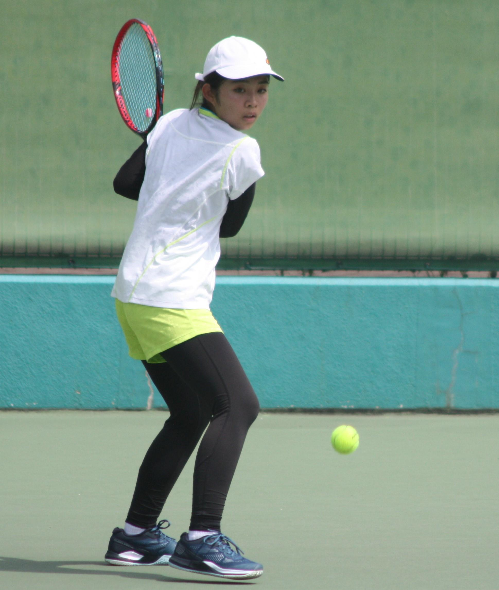


〇７月１８日(日) 亀岡市の
亀岡運動公園テニスコートで開催された、
亀岡ジュニア平和祭テニス大会において、
以下の戦績を収めました。
女子シングルス 優 勝 本間 涼帆(２年)
準優勝 大槻 芽衣(１年)
第３位 藤本萌七未(２年)
第３位 安田 奈央(２年)
女子ダブルス 優 勝 藤本(２年)･本間(２年)
準優勝 安田(２年)･永井(２年)
第３位 大槻(１年)･吉田(１年)
１年生の初心者にとっては、
初めての大会となり、いい経験となりました。
コロナ禍の中、大会を開催してくださった
亀岡市テニス協会の皆様、
ありがとうございました。

〇７月２２日(木)から２８日(水)にかけて開催された、
2021京都サマージュニアテニス選手権大会において、
以下の戦績を収めました。
１７歳以下女子シングルス
ベスト１６ 藤本萌七未(２年)
ベスト３２ 安田 奈央(２年)
ベスト６４ 本間 涼帆(２年)
ベスト６４ 大槻 芽衣(１年)
１７歳以下女子ダブルス
ベスト４ 藤本(２年)･本間(２年)
ベスト１６ 大槻(１年)･吉田(１年)
ベスト３２ 安田(２年)･永井(２年)
私学を含めた府下大会で、
ようやく賞状とメダルを獲得することが
できました。


◎令和３年度 女子テニス部 紹介
女子テニス部は、テニスを愛し、テニス部の一員であることを誇りにし、
心身を鍛え、試合で勝つことの喜びを得るために、日々練習しています。
・部員：１年７名 ２年９名 ３年７名 計２３名
(なお、３年生は現在は現役を退いています。)
・活動時間：平 日 ２時間～３時間（木曜日は練習なし）
土曜日 ３時間～５時間
日曜日 ３時間～５時間
・年間の試合：京都府高体連の大会（団体戦３回 個人戦３回）
京都府テニス協会の大会（個人戦３回）
長岡京市テニス協会、亀岡市テニス協会の大会
・その他：京都府下および近畿各県の高校との練習試合
夏期、秋期の合宿
◎活動報告 ６月：新チーム最初の取り組みとして
シングルス部内戦を行い、部内順位を決めました。
◎練習試合：７月１０日（土）、太陽ヶ丘テニスコートで、
南陽高校と、新チーム最初の練習試合を行いました。
新型コロナウイルス感染拡大防止のため、
長い間活動に制限が加えられ、
十分な練習ができていない中、
みんな成果を残すことができました。
特に、１年生の初心者にとっては、
初めての体験でしたが、
立派に戦うことができました。

女子テニス部 大会結果

◎女子テニス部は、
５月１５日㈯、太陽ヶ丘テニスコートで開催された、
全国高校総体京都府予選団体の部に出場し、
以下の成績を収めました。
団体メンバー（登録番号順）
１ 村上 らん(３年)
２ 本間 涼帆(２年)
３ 藤本萌七未(２年)
４ 松本 胡桃(３年)
５ 岡田 美苑(３年)
対戦結果
２回戦 山城 ２０(打切) 西京
３回戦 山城 ３０ 同志社
４回戦 山城 ０２(打切) 京都外大西
・２回戦では強豪の同志社との対戦となりました。
シングルスは、顧問の心配をよそに、快勝しました。
タイブレークの末に勝利したダブルスは見事でした。
・３回戦は第１シードの京都外大西との対戦で、
シングルスは完敗でしたが、しっかり打ち合うことができました。
ダブルスは４－４の15-15での打ち切りとなり、
競り合ったまま終えることができました。
・結果として第５シードの面目を保つことができました。
他校との練習試合ができない中、
練習相手になってくれた男子テニス部のみんな、
ありがとうございました。
また、大会の開催に尽力いただいた関係者の皆様
ありがとうございました。

◎女子テニス部 ３年生が引退しました。
５月１５日(土)の全国高校総体京都府予選団体の部を終えて、
３年生が全試合日程を終了し、引退を迎えました。
団体メンバーは試合のあと学校へ戻り、
新型コロナウイルス感染症拡大防止のため応援に行けなかった他の部員と合流し、
引退式を行いました。
３年生は涙の中、後輩達に最後のメッセージを送り、
後輩達は先輩に記念品を渡し、
最後に全員で思い出のスライドショーを観て、
名残を惜しみながら、引退式を終えました。
今まで様々な形でご支援をいただいた３年生の保護者の皆様、
お子様の活躍を直接見ていただけなかったのはまことに残念でしたが、
この２年半足らずの間に、みんな本当に大きく成長しました。
ぜひ、褒めてあげてください。
ありがとうございました。

女子テニス部 大会結果・活動報告
◎全国高校総体京都府予選個人の部 結果
４月25日㈰から５月５日㈷にかけて、
各予選会場及び、太陽ヶ丘テニスコートを本戦会場として、
全国高校総体京都府予選個人の部が開催され、
本校女子テニス部は、以下のような成績を収めました。
２次予選出場者 戦績
シングルス ベスト64 本間 涼帆(２年) 安田 奈央(２年)
岡田 美苑(３年) 松本 胡桃(３年)
ベスト32 藤本萌七未(２年)
ベスト16 村上 らん(３年)
ダブルス ベスト16 藤本(２年)本間(２年) ペア
２次予選に進めなかった者も、
多くがブロック決勝まで勝ち上がりました。
みんな良く頑張りました。


◎2021京都ジュニアテニス選手権大会 結果
３月25日㈭から４月２日㈮にかけて、
各予選会場及び、太陽ヶ丘テニスコートを本戦会場として、
2021京都ジュニアテニス選手権大会が開催され、
本校女子テニス部は、以下のような成績を収めました。
本戦出場者 戦績（学年は当時）
シングルス ベスト64 藤本萌七未(１年) 久保田茉由(２年)
松本 胡桃(２年)
ベスト32 本間 涼帆(１年) 岡田 美苑(２年)
ベスト16 村上 らん(２年)...順位戦により、第11位
ダブルス ベスト32 藤本(１年)本間(１年) ペア
村上(２年)松本(２年) ペア

◎長岡京市ジュニアテニス選手権大会 結果 (学年は当時)
３月20日㈯と21日㈰に、アクアパルコ洛西等において、
長岡京市ジュニアテニス選手権大会が開催され、
本校女子テニス部は、以下のような成績を収めました。
シングルス 準優勝 藤本萌七未(１年)
第３位 村上 らん(２年)
ベスト８ 本間 涼帆(１年)
ダブルス 準優勝 藤本(１年)本間(１年) ペア
第３位 村上(２年)松本(２年) ペア
＊本年度は新型コロナウイルス感染拡大防止のため、
本戦のみのトーナメントでした。


◎３月15日㈪、自宅学習日を利用して、
太陽ヶ丘テニスコートにて、洛西高校と練習試合を行いました。
新型コロナウイルス感染拡大の影響で、
思うように練習試合ができない中、
コートを確保していただき、
男子選手まで動員してくださった洛西高校のみなさん、
ありがとうございました。

◎３月１日㈪ ３年生が卒業しました。
新型コロナウイルス感染拡大の影響で、
部活動の集大成となる大会が中止になり、
受験勉強においても大変な苦労をした学年でしたが、
すべて最後までやり遂げました。
２月26日㈮のお別れ会では、
例年のような会食やゲームはできませんでしたが、
後輩達からプレゼントを受け取って、
みんな笑顔で卒業していきました。